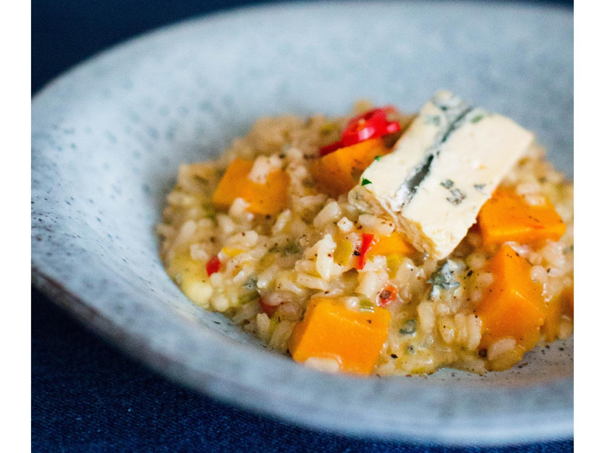

Тыква, как и морковь, довольно сладкая, поэтому ее используют в десертах. Но если эту сладость сбалансировать соленостью, пряностью и по желанию остротой, получается очень вкусно. Здесь ризотто готовится по классической схеме. Обязательно нужно купить правильный рис и ни в коем случае не мыть его: крахмал в ризотто очень важен. В этом рецепте использовалась тыква сорта Хоккайдо – она менее крахмалистая, чем другие сорта. При желании ее можно карамелизовать, добавляя в ризотто не сразу, а минут через десять после того, как вольете первый половник бульона. Кожица у тыквы довольно жесткая, поэтому удобно сначала резать ее на дольки, а затем счищать кожу при помощи овощечистки.